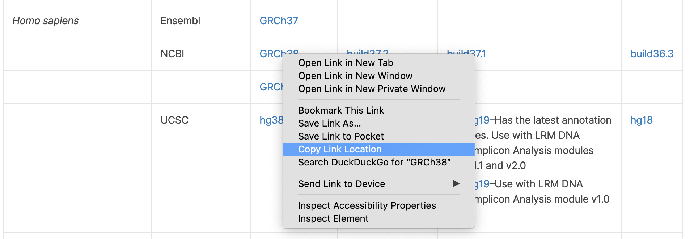

In this module, we will learn:
- what a reference genome is and what it contains
- details about the FASTA and GTF formats
- to appreciate the differences in gene identifiers
- how to download a reference genome
Differential Expression Workflow
Here we will set the stage for the next steps by discussing reference
genomes, which are integral to genome alignments and gene/isoform
quantification. Along the way we will touch on some things to be aware
of.
Reference Genomes
A reference genome consists of the reference
sequence and, optionally, any number of genomic
annotations that describe attributes about that sequence.
Examples of annotations include:
- Gene models consisting of the location and other information about
genes.
- Variants consisting of the location of common or rare genetic
variants, their alleles, and frequencies.
- Small RNAs consisting of the location and other information about
various types of small RNAs.
Of particular relevance to us for this workshop are the reference
sequence and gene models.
Reference Sequence
Reference sequence is stored in FASTA files. They
are similar to FASTQ files in their storage of sequence information, but
their format is a little different in a couple ways:
- Records are separated by lines beginning with
>
instead of @.
- Only the sequence is stored in a FASTA file, there is no notion of
quality attached to the nucleotides.
>chrM
GATCACAGGTCTATCACCCTATTAACCACTCACGGGAGCTCTCCATGCAT
TTGGTATTTTCGTCTGGGGGGTGTGCACGCGATAGCATTGCGAGACGCTG
GAGCCGGAGCACCCTATGTCGCAGTATCTGTCTTTGATTCCTGCCTCATT
CTATTATTTATCGCACCTACGTTCAATATTACAGGCGAACATACCTACTA
AAGTGTGTTAATTAATTAATGCTTGTAGGACATAATAATAACAATTGAAT
GTCTGCACAGCCGCTTTCCACACAGACATCATAACAAAAAATTTCCACCA
AACCCCCCCCTCCCCCCGCTTCTGGCCACAGCACTTAAACACATCTCTGC
CAAACCCCAAAAACAAAGAACCCTAACACCAGCCTAACCAGATTTCAAAT
TTTATCTTTAGGCGGTATGCACTTTTAACAGTCACCCCCCAACTAACACA
Gene Models
Well-characterized organisms (e.g. human, mouse, zebrafish) have
fairly mature gene models. These are stored in GTF format, which gives location and other
information about each gene feature. Below are two examples:

The GTF format stores specific information in each column:
| 1 |
Chromosome |
| 2 |
Source, e.g. ensembl, havana |
| 3 |
Gene feature, e.g. exon, intron, mRNA, transcript |
| 4 |
Start location, 1-based |
| 5 |
End location, 1-based |
| 6 |
Score |
| 7 |
Strand |
| 8 |
Frame, relating to codons |
| 9 |
Attribute, a semicolon separated list of key/value pairs giving
additional information about the feature. |

Minutiae, Very Briefly
Bioinformatics is a relatively new, fast-changing, field and its data
standards and formats are no different. Consequently there are some
oddities and tedious items of note which we would like to only briefly
touch on here.
Genome Builds
On occassion new reference genomes are released, and the genome build
number changes. You may be familiar with the UCSC manner of naming human
genome builds: hg18, hg19, hg38. ENSEMBL, naturally, has their own way
of referring to genome builds: GRCh36, GRCh37, and GRCh38. Notice with
the most recent human reference, the numbering now aligns between UCSC
and ENSEMBL.
Different organisms have their own versioning.
Gene IDs
The two GTF examples above highlight different ways of referring to
the same gene. In the first GTF we see:
And in the second GTF we see:
- ENSG00000223972, the ENSEMBL gene ID
- DDX11L1, the gene symbol, thankfully the same
- ENST00000456328, the ENSEMBL transcript ID
Translating between different gene IDs is possible, as we will see in
Day Two with biomaRt. But in terms of best
practice it is generally a good idea to avoid using the gene
symbol as the primary gene identifier because not everyone refers to the
same gene by the same symbol.
Getting a Reference Genome
The Illumina
iGenomes resource is one of the easiest, and most comprehensive,
ways to download a reference genome. iGenomes includes both the
reference sequence and gene models.
Reference genomes can be very large, depending on
the organism, and so we will not download one to the Amazon instance we
are using for this workshop. We’ve included instructions for downloading
these, in case you want to download these to the server where you intend
to later do a similar RNA-seq analysis (e.g. on High-Performance
Compute, GreatLakes).
How would I download references with iGenomes?
As noted, it’s not recommended to download the iGenomes references to
the AWS instance. However, if you wanted to know in general how you
would do that, the process is described here.
First go to the iGenomes
page, find the build you want from the source you want, right click the
genome build you want to download, and select “Copy link location”:

iGenomes image for copying link location
Then on the remote server you would go to the directory you’d like to
download the genome to and type (that URL is what we copied):
$ wget http://igenomes.illumina.com.s3-website-us-east-1.amazonaws.com/Homo_sapiens/NCBI/GRCh38/Homo_sapiens_NCBI_GRCh38.tar.gz
After the download finishes (it may take a while as it is tens of GB
large), you can unpack it with:
$ tar -xf Homo_sapiens_NCBI_GRCh38.tar.gz
Which Reference is Right for Me?
The key is to be consistent in your research. Switching from ENSEMBL
to UCSC will create many headaches because of the change in gene
identifiers, and differences in the gene models themselves. Often people
choose the one they’re most comfortable with, which is often a function
of historical accident. The key is not to overthink it.
Another important note is not to mix the sources. If you download
reference sequence from UCSC, don’t use an ENSEMBL GTF (and vice versa).
One of the quirky differences between the two databases is that ENSEMBL
refers to chromosome only by their number, i.e. 1, whereas
UCSC refers to chromsomes as chr1. This makes reference
FASTAs from one source incompatible with gene builds from another.
These materials have been adapted and extended from materials created
by the Harvard Chan
Bioinformatics Core (HBC). These are open access materials
distributed under the terms of the Creative Commons
Attribution license (CC BY 4.0), which permits unrestricted use,
distribution, and reproduction in any medium, provided the original
author and source are credited.
LS0tCnRpdGxlOiAiUmVmZXJlbmNlIEdlbm9tZXMiCmF1dGhvcjogIlVNIEJpb2luZm9ybWF0aWNzIENvcmUiCm91dHB1dDoKICAgICAgICBodG1sX2RvY3VtZW50OgogICAgICAgICAgICBpbmNsdWRlczoKICAgICAgICAgICAgICAgIGluX2hlYWRlcjogaGVhZGVyLmh0bWwKICAgICAgICAgICAgdGhlbWU6IHBhcGVyCiAgICAgICAgICAgIHRvYzogdHJ1ZQogICAgICAgICAgICB0b2NfZGVwdGg6IDQKICAgICAgICAgICAgdG9jX2Zsb2F0OiB0cnVlCiAgICAgICAgICAgIG51bWJlcl9zZWN0aW9uczogZmFsc2UKICAgICAgICAgICAgZmlnX2NhcHRpb246IHRydWUKICAgICAgICAgICAgbWFya2Rvd246IEdGTQogICAgICAgICAgICBjb2RlX2Rvd25sb2FkOiB0cnVlCi0tLQo8c3R5bGUgdHlwZT0idGV4dC9jc3MiPgpib2R5eyAvKiBOb3JtYWwgICovCiAgICAgIGZvbnQtc2l6ZTogMTRwdDsKICB9CnByZSB7CiAgZm9udC1zaXplOiAxMnB0Cn0KPC9zdHlsZT4KCkluIHRoaXMgbW9kdWxlLCB3ZSB3aWxsIGxlYXJuOgoKKiB3aGF0IGEgcmVmZXJlbmNlIGdlbm9tZSBpcyBhbmQgd2hhdCBpdCBjb250YWlucwoqIGRldGFpbHMgYWJvdXQgdGhlIEZBU1RBIGFuZCBHVEYgZm9ybWF0cwoqIHRvIGFwcHJlY2lhdGUgdGhlIGRpZmZlcmVuY2VzIGluIGdlbmUgaWRlbnRpZmllcnMKKiBob3cgdG8gZG93bmxvYWQgYSByZWZlcmVuY2UgZ2Vub21lCgojIERpZmZlcmVudGlhbCBFeHByZXNzaW9uIFdvcmtmbG93CgpIZXJlIHdlIHdpbGwgc2V0IHRoZSBzdGFnZSBmb3IgdGhlIG5leHQgc3RlcHMgYnkgZGlzY3Vzc2luZyByZWZlcmVuY2UgZ2Vub21lcywgd2hpY2ggYXJlIGludGVncmFsIHRvIGdlbm9tZSBhbGlnbm1lbnRzIGFuZCBnZW5lL2lzb2Zvcm0gcXVhbnRpZmljYXRpb24uIEFsb25nIHRoZSB3YXkgd2Ugd2lsbCB0b3VjaCBvbiBzb21lIHRoaW5ncyB0byBiZSBhd2FyZSBvZi4KCiFbXShpbWFnZXMvd2F5ZmluZGVyL3dheWZpbmRlci1SZWZlcmVuY2VHZW5vbWVzLnBuZykKPGJyPgo8YnI+Cjxicj4KPGJyPgoKIyBSZWZlcmVuY2UgR2Vub21lcwoKQSByZWZlcmVuY2UgZ2Vub21lIGNvbnNpc3RzIG9mIHRoZSAqKnJlZmVyZW5jZSBzZXF1ZW5jZSoqIGFuZCwgb3B0aW9uYWxseSwgYW55IG51bWJlciBvZiAqKmdlbm9taWMgYW5ub3RhdGlvbnMqKiB0aGF0IGRlc2NyaWJlIGF0dHJpYnV0ZXMgYWJvdXQgdGhhdCBzZXF1ZW5jZS4gRXhhbXBsZXMgb2YgYW5ub3RhdGlvbnMgaW5jbHVkZToKCiogR2VuZSBtb2RlbHMgY29uc2lzdGluZyBvZiB0aGUgbG9jYXRpb24gYW5kIG90aGVyIGluZm9ybWF0aW9uIGFib3V0IGdlbmVzLgoqIFZhcmlhbnRzIGNvbnNpc3Rpbmcgb2YgdGhlIGxvY2F0aW9uIG9mIGNvbW1vbiBvciByYXJlIGdlbmV0aWMgdmFyaWFudHMsIHRoZWlyIGFsbGVsZXMsIGFuZCBmcmVxdWVuY2llcy4KKiBTbWFsbCBSTkFzIGNvbnNpc3Rpbmcgb2YgdGhlIGxvY2F0aW9uIGFuZCBvdGhlciBpbmZvcm1hdGlvbiBhYm91dCB2YXJpb3VzIHR5cGVzIG9mIHNtYWxsIFJOQXMuCgpPZiBwYXJ0aWN1bGFyIHJlbGV2YW5jZSB0byB1cyBmb3IgdGhpcyB3b3Jrc2hvcCBhcmUgdGhlIHJlZmVyZW5jZSBzZXF1ZW5jZSBhbmQgZ2VuZSBtb2RlbHMuCgojIyBSZWZlcmVuY2UgU2VxdWVuY2UKClJlZmVyZW5jZSBzZXF1ZW5jZSBpcyBzdG9yZWQgaW4gW0ZBU1RBXShodHRwczovL2VuLndpa2lwZWRpYS5vcmcvd2lraS9GQVNUQV9mb3JtYXQpIGZpbGVzLiBUaGV5IGFyZSBzaW1pbGFyIHRvIEZBU1RRIGZpbGVzIGluIHRoZWlyIHN0b3JhZ2Ugb2Ygc2VxdWVuY2UgaW5mb3JtYXRpb24sIGJ1dCB0aGVpciBmb3JtYXQgaXMgYSBsaXR0bGUgZGlmZmVyZW50IGluIGEgY291cGxlIHdheXM6CgoxLiBSZWNvcmRzIGFyZSBzZXBhcmF0ZWQgYnkgbGluZXMgYmVnaW5uaW5nIHdpdGggYD5gIGluc3RlYWQgb2YgYEBgLgoyLiBPbmx5IHRoZSBzZXF1ZW5jZSBpcyBzdG9yZWQgaW4gYSBGQVNUQSBmaWxlLCB0aGVyZSBpcyBubyBub3Rpb24gb2YgcXVhbGl0eSBhdHRhY2hlZCB0byB0aGUgbnVjbGVvdGlkZXMuCgpgYGAKPmNock0KR0FUQ0FDQUdHVENUQVRDQUNDQ1RBVFRBQUNDQUNUQ0FDR0dHQUdDVENUQ0NBVEdDQVQKVFRHR1RBVFRUVENHVENUR0dHR0dHVEdUR0NBQ0dDR0FUQUdDQVRUR0NHQUdBQ0dDVEcKR0FHQ0NHR0FHQ0FDQ0NUQVRHVENHQ0FHVEFUQ1RHVENUVFRHQVRUQ0NUR0NDVENBVFQKQ1RBVFRBVFRUQVRDR0NBQ0NUQUNHVFRDQUFUQVRUQUNBR0dDR0FBQ0FUQUNDVEFDVEEKQUFHVEdUR1RUQUFUVEFBVFRBQVRHQ1RUR1RBR0dBQ0FUQUFUQUFUQUFDQUFUVEdBQVQKR1RDVEdDQUNBR0NDR0NUVFRDQ0FDQUNBR0FDQVRDQVRBQUNBQUFBQUFUVFRDQ0FDQ0EKQUFDQ0NDQ0NDQ1RDQ0NDQ0NHQ1RUQ1RHR0NDQUNBR0NBQ1RUQUFBQ0FDQVRDVENUR0MKQ0FBQUNDQ0NBQUFBQUNBQUFHQUFDQ0NUQUFDQUNDQUdDQ1RBQUNDQUdBVFRUQ0FBQVQKVFRUQVRDVFRUQUdHQ0dHVEFUR0NBQ1RUVFRBQUNBR1RDQUNDQ0NDQ0FBQ1RBQUNBQ0EKYGBgCgojIyBHZW5lIE1vZGVscwoKV2VsbC1jaGFyYWN0ZXJpemVkIG9yZ2FuaXNtcyAoZS5nLiBodW1hbiwgbW91c2UsIHplYnJhZmlzaCkgaGF2ZSBmYWlybHkgbWF0dXJlIGdlbmUgbW9kZWxzLiBUaGVzZSBhcmUgc3RvcmVkIGluIFtHVEZdKGh0dHBzOi8vdXNlYXN0LmVuc2VtYmwub3JnL2luZm8vd2Vic2l0ZS91cGxvYWQvZ2ZmLmh0bWwpe3RhcmdldD0iX2JsYW5rIn0gZm9ybWF0LCB3aGljaCBnaXZlcyBsb2NhdGlvbiBhbmQgb3RoZXIgaW5mb3JtYXRpb24gYWJvdXQgZWFjaCBnZW5lIGZlYXR1cmUuIEJlbG93IGFyZSB0d28gZXhhbXBsZXM6Cgo8YnI+CiFbUmVmU2VxIEdURl0oaW1hZ2VzL2d0Zl9yZWZzZXEucG5nKQo8YnI+PGJyPgohW0VOU0VNQkwgR1RGXShpbWFnZXMvZ3RmX2Vuc2VtYmwucG5nKQo8YnI+PGJyPgoKVGhlIEdURiBmb3JtYXQgc3RvcmVzIHNwZWNpZmljIGluZm9ybWF0aW9uIGluIGVhY2ggY29sdW1uOgoKfCBDb2x1bW4gfCBEZXNjcmlwdGlvbiB8CnwgOi0tLS06IHwgLS0tLS0tLS0tLS0gfAp8IDEgfCBDaHJvbW9zb21lIHwKfCAyIHwgU291cmNlLCBlLmcuIGVuc2VtYmwsIGhhdmFuYSB8CnwgMyB8IEdlbmUgZmVhdHVyZSwgZS5nLiBleG9uLCBpbnRyb24sIG1STkEsIHRyYW5zY3JpcHQgfAp8IDQgfCBTdGFydCBsb2NhdGlvbiwgMS1iYXNlZCB8CnwgNSB8IEVuZCBsb2NhdGlvbiwgMS1iYXNlZCB8CnwgNiB8IFNjb3JlIHwKfCA3IHwgU3RyYW5kIHwKfCA4IHwgRnJhbWUsIHJlbGF0aW5nIHRvIGNvZG9ucyB8CnwgOSB8IEF0dHJpYnV0ZSwgYSBzZW1pY29sb24gc2VwYXJhdGVkIGxpc3Qgb2Yga2V5L3ZhbHVlIHBhaXJzIGdpdmluZyBhZGRpdGlvbmFsIGluZm9ybWF0aW9uIGFib3V0IHRoZSBmZWF0dXJlLiB8CgoKPGJyPjxicj4KIVtBbmltYXRlZCByZWZlcmVuY2UgZGF0YV0oaW1hZ2VzL2Zhc3RhLWd0Zi1nZW5lLW1vZGVscy5naWYpCjxicj48YnI+CgojIyMgTWludXRpYWUsIFZlcnkgQnJpZWZseQoKQmlvaW5mb3JtYXRpY3MgaXMgYSByZWxhdGl2ZWx5IG5ldywgZmFzdC1jaGFuZ2luZywgZmllbGQgYW5kIGl0cyBkYXRhIHN0YW5kYXJkcyBhbmQgZm9ybWF0cyBhcmUgbm8gZGlmZmVyZW50LiBDb25zZXF1ZW50bHkgdGhlcmUgYXJlIHNvbWUgb2RkaXRpZXMgYW5kIHRlZGlvdXMgaXRlbXMgb2Ygbm90ZSB3aGljaCB3ZSB3b3VsZCBsaWtlIHRvIG9ubHkgYnJpZWZseSB0b3VjaCBvbiBoZXJlLgoKIyMjIEdlbm9tZSBCdWlsZHMKCk9uIG9jY2Fzc2lvbiBuZXcgcmVmZXJlbmNlIGdlbm9tZXMgYXJlIHJlbGVhc2VkLCBhbmQgdGhlIGdlbm9tZSBidWlsZCBudW1iZXIgY2hhbmdlcy4gWW91IG1heSBiZSBmYW1pbGlhciB3aXRoIHRoZSBVQ1NDIG1hbm5lciBvZiBuYW1pbmcgaHVtYW4gZ2Vub21lIGJ1aWxkczogaGcxOCwgaGcxOSwgaGczOC4gRU5TRU1CTCwgbmF0dXJhbGx5LCBoYXMgdGhlaXIgb3duIHdheSBvZiByZWZlcnJpbmcgdG8gZ2Vub21lIGJ1aWxkczogR1JDaDM2LCBHUkNoMzcsIGFuZCBHUkNoMzguIE5vdGljZSB3aXRoIHRoZSBtb3N0IHJlY2VudCBodW1hbiByZWZlcmVuY2UsIHRoZSBudW1iZXJpbmcgbm93IGFsaWducyBiZXR3ZWVuIFVDU0MgYW5kIEVOU0VNQkwuCgpEaWZmZXJlbnQgb3JnYW5pc21zIGhhdmUgdGhlaXIgb3duIHZlcnNpb25pbmcuCgojIyMgQW5ub3RhdGlvbiBTb3VyY2VzCgpbTkNCSSBSZWZTZXFdKGh0dHBzOi8vd3d3Lm5jYmkubmxtLm5paC5nb3YvcmVmc2VxL3JzZy8pLCBbRU5TRU1CTF0oaHR0cHM6Ly93d3cuZW5zZW1ibC5vcmcvaW5mby9nZW5vbWUvZ2VuZWJ1aWxkL2luZGV4Lmh0bWwpLCBhbmQgW1VDU0MgS25vd24gR2VuZXNdKGh0dHBzOi8vYWNhZGVtaWMub3VwLmNvbS9iaW9pbmZvcm1hdGljcy9hcnRpY2xlLzIyLzkvMTAzNi8yMDAwOTMpIGFyZSB0aGUgdGhyZWUgcHJpbWFyeSBnZW5lIGFubm90YXRpb24gZGF0YWJhc2VzIChkaWZmZXJlbnQgb3JnYW5pc21zIGhhdmUgdGhlaXIgb3duIGRhdGFiYXNlcykuIFdlIHdpbGwgbm90IGdvIGludG8gZXhhY3RseSBob3cgdGhlIGdlbmUgYW5ub3RhdGlvbnMgYXJlIGRpZmZlcmVudCwgYnV0IHdlIG5vdGUgdGhhdCB0aGUgYXJlLCBhbmQgW290aGVycyBoYXZlIGV4YW1pbmVkIHRoZSBjb25zZXF1ZW5jZXMgb2YgdGhpc10oaHR0cHM6Ly9ibWNnZW5vbWljcy5iaW9tZWRjZW50cmFsLmNvbS9hcnRpY2xlcy8xMC4xMTg2L3MxMjg2NC0wMTUtMTMwOC04KS4KCiMjIyBHZW5lIElEcwoKVGhlIHR3byBHVEYgZXhhbXBsZXMgYWJvdmUgaGlnaGxpZ2h0IGRpZmZlcmVudCB3YXlzIG9mIHJlZmVycmluZyB0byB0aGUgc2FtZSBnZW5lLiBJbiB0aGUgZmlyc3QgR1RGIHdlIHNlZToKCiogRERYMTFMMSwgdGhlIGdlbmUgc3ltYm9sLCBjb250cm9sbGVkIGJ5IHRoZSBbSHVtYW4gR2VuZSBOb21lbmNsYXR1cmUgQ29tbWl0dGVlIChIVUdPKV0oaHR0cHM6Ly93d3cuZ2VuZW5hbWVzLm9yZy8pLgoqIE5SXzA0NjAxOCwgdGhlIFJlZlNlcSB0cmFuc2NyaXB0IElECgpBbmQgaW4gdGhlIHNlY29uZCBHVEYgd2Ugc2VlOgoKKiBFTlNHMDAwMDAyMjM5NzIsIHRoZSBFTlNFTUJMIGdlbmUgSUQKKiBERFgxMUwxLCB0aGUgZ2VuZSBzeW1ib2wsIHRoYW5rZnVsbHkgdGhlIHNhbWUKKiBFTlNUMDAwMDA0NTYzMjgsIHRoZSBFTlNFTUJMIHRyYW5zY3JpcHQgSUQKClRyYW5zbGF0aW5nIGJldHdlZW4gZGlmZmVyZW50IGdlbmUgSURzIGlzIHBvc3NpYmxlLCBhcyB3ZSB3aWxsIHNlZSBpbiBEYXkgVHdvIHdpdGggYGJpb21hUnRgLiBCdXQgaW4gdGVybXMgb2YgKipiZXN0IHByYWN0aWNlKiogaXQgaXMgZ2VuZXJhbGx5IGEgZ29vZCBpZGVhIHRvIGF2b2lkIHVzaW5nIHRoZSBnZW5lIHN5bWJvbCBhcyB0aGUgcHJpbWFyeSBnZW5lIGlkZW50aWZpZXIgYmVjYXVzZSBub3QgZXZlcnlvbmUgcmVmZXJzIHRvIHRoZSBzYW1lIGdlbmUgYnkgdGhlIHNhbWUgc3ltYm9sLgoKIyBHZXR0aW5nIGEgUmVmZXJlbmNlIEdlbm9tZQoKVGhlIFtJbGx1bWluYSBpR2Vub21lc10oaHR0cHM6Ly9zdXBwb3J0LmlsbHVtaW5hLmNvbS9zZXF1ZW5jaW5nL3NlcXVlbmNpbmdfc29mdHdhcmUvaWdlbm9tZS5odG1sKSByZXNvdXJjZSBpcyBvbmUgb2YgdGhlIGVhc2llc3QsIGFuZCBtb3N0IGNvbXByZWhlbnNpdmUsIHdheXMgdG8gZG93bmxvYWQgYSByZWZlcmVuY2UgZ2Vub21lLiBpR2Vub21lcyBpbmNsdWRlcyBib3RoIHRoZSByZWZlcmVuY2Ugc2VxdWVuY2UgYW5kIGdlbmUgbW9kZWxzLgoKUmVmZXJlbmNlIGdlbm9tZXMgY2FuIGJlICoqdmVyeSBsYXJnZSoqLCBkZXBlbmRpbmcgb24gdGhlIG9yZ2FuaXNtLCBhbmQgc28gd2Ugd2lsbCBub3QgZG93bmxvYWQgb25lIHRvIHRoZSBBbWF6b24gaW5zdGFuY2Ugd2UgYXJlIHVzaW5nIGZvciB0aGlzIHdvcmtzaG9wLiBXZSd2ZSBpbmNsdWRlZCBpbnN0cnVjdGlvbnMgZm9yIGRvd25sb2FkaW5nIHRoZXNlLCBpbiBjYXNlIHlvdSB3YW50IHRvIGRvd25sb2FkIHRoZXNlIHRvIHRoZSBzZXJ2ZXIgd2hlcmUgeW91IGludGVuZCB0byBsYXRlciBkbyBhIHNpbWlsYXIgUk5BLXNlcSBhbmFseXNpcyAoZS5nLiBvbiBIaWdoLVBlcmZvcm1hbmNlIENvbXB1dGUsIEdyZWF0TGFrZXMpLgoKPGRldGFpbHM+CjxzdW1tYXJ5PkhvdyB3b3VsZCBJIGRvd25sb2FkIHJlZmVyZW5jZXMgd2l0aCBpR2Vub21lcz88L3N1bW1hcnk+CgpBcyBub3RlZCwgaXQncyBub3QgcmVjb21tZW5kZWQgdG8gZG93bmxvYWQgdGhlIGlHZW5vbWVzIHJlZmVyZW5jZXMgdG8gdGhlIEFXUyBpbnN0YW5jZS4gSG93ZXZlciwgaWYgeW91IHdhbnRlZCB0byBrbm93IGluIGdlbmVyYWwgaG93IHlvdSB3b3VsZCBkbyB0aGF0LCB0aGUgcHJvY2VzcyBpcyBkZXNjcmliZWQgaGVyZS4KCkZpcnN0IGdvIHRvIHRoZSBbaUdlbm9tZXNdKGh0dHBzOi8vc3VwcG9ydC5pbGx1bWluYS5jb20vc2VxdWVuY2luZy9zZXF1ZW5jaW5nX3NvZnR3YXJlL2lnZW5vbWUuaHRtbCkgcGFnZSwgZmluZCB0aGUgYnVpbGQgeW91IHdhbnQgZnJvbSB0aGUgc291cmNlIHlvdSB3YW50LCByaWdodCBjbGljayB0aGUgZ2Vub21lIGJ1aWxkIHlvdSB3YW50IHRvIGRvd25sb2FkLCBhbmQgc2VsZWN0ICJDb3B5IGxpbmsgbG9jYXRpb24iOgoKIVtpR2Vub21lcyBpbWFnZSBmb3IgY29weWluZyBsaW5rIGxvY2F0aW9uXShpbWFnZXMvZ2Vub21lX2NvcHlfbGluay5wbmcpCgpUaGVuIG9uIHRoZSByZW1vdGUgc2VydmVyIHlvdSB3b3VsZCBnbyB0byB0aGUgZGlyZWN0b3J5IHlvdSdkIGxpa2UgdG8gZG93bmxvYWQgdGhlIGdlbm9tZSB0byBhbmQgdHlwZSAodGhhdCBVUkwgaXMgd2hhdCB3ZSBjb3BpZWQpOgoKYGBgCiQgd2dldCBodHRwOi8vaWdlbm9tZXMuaWxsdW1pbmEuY29tLnMzLXdlYnNpdGUtdXMtZWFzdC0xLmFtYXpvbmF3cy5jb20vSG9tb19zYXBpZW5zL05DQkkvR1JDaDM4L0hvbW9fc2FwaWVuc19OQ0JJX0dSQ2gzOC50YXIuZ3oKYGBgCgpBZnRlciB0aGUgZG93bmxvYWQgZmluaXNoZXMgKGl0IG1heSB0YWtlIGEgd2hpbGUgYXMgaXQgaXMgdGVucyBvZiBHQiBsYXJnZSksIHlvdSBjYW4gdW5wYWNrIGl0IHdpdGg6CgpgYGAKJCB0YXIgLXhmIEhvbW9fc2FwaWVuc19OQ0JJX0dSQ2gzOC50YXIuZ3oKYGBgCgo8L2RldGFpbHM+CgoKIyMgV2hpY2ggUmVmZXJlbmNlIGlzIFJpZ2h0IGZvciBNZT8KClRoZSBrZXkgaXMgdG8gYmUgY29uc2lzdGVudCBpbiB5b3VyIHJlc2VhcmNoLiBTd2l0Y2hpbmcgZnJvbSBFTlNFTUJMIHRvIFVDU0Mgd2lsbCBjcmVhdGUgbWFueSBoZWFkYWNoZXMgYmVjYXVzZSBvZiB0aGUgY2hhbmdlIGluIGdlbmUgaWRlbnRpZmllcnMsIGFuZCBkaWZmZXJlbmNlcyBpbiB0aGUgZ2VuZSBtb2RlbHMgdGhlbXNlbHZlcy4gT2Z0ZW4gcGVvcGxlIGNob29zZSB0aGUgb25lIHRoZXkncmUgbW9zdCBjb21mb3J0YWJsZSB3aXRoLCB3aGljaCBpcyBvZnRlbiBhIGZ1bmN0aW9uIG9mIGhpc3RvcmljYWwgYWNjaWRlbnQuIFRoZSBrZXkgaXMgbm90IHRvIG92ZXJ0aGluayBpdC4KCkFub3RoZXIgaW1wb3J0YW50IG5vdGUgaXMgbm90IHRvIG1peCB0aGUgc291cmNlcy4gSWYgeW91IGRvd25sb2FkIHJlZmVyZW5jZSBzZXF1ZW5jZSBmcm9tIFVDU0MsIGRvbid0IHVzZSBhbiBFTlNFTUJMIEdURiAoYW5kIHZpY2UgdmVyc2EpLiBPbmUgb2YgdGhlIHF1aXJreSBkaWZmZXJlbmNlcyBiZXR3ZWVuIHRoZSB0d28gZGF0YWJhc2VzIGlzIHRoYXQgRU5TRU1CTCByZWZlcnMgdG8gY2hyb21vc29tZSBvbmx5IGJ5IHRoZWlyIG51bWJlciwgaS5lLiBgMWAsIHdoZXJlYXMgVUNTQyByZWZlcnMgdG8gY2hyb21zb21lcyBhcyBgY2hyMWAuIFRoaXMgbWFrZXMgcmVmZXJlbmNlIEZBU1RBcyBmcm9tIG9uZSBzb3VyY2UgaW5jb21wYXRpYmxlIHdpdGggZ2VuZSBidWlsZHMgZnJvbSBhbm90aGVyLgoKPGJyPgo8YnI+CgotLS0KClRoZXNlIG1hdGVyaWFscyBoYXZlIGJlZW4gYWRhcHRlZCBhbmQgZXh0ZW5kZWQgZnJvbSBtYXRlcmlhbHMgY3JlYXRlZCBieSB0aGUgW0hhcnZhcmQgQ2hhbiBCaW9pbmZvcm1hdGljcyBDb3JlIChIQkMpXShodHRwOi8vYmlvaW5mb3JtYXRpY3Muc3BoLmhhcnZhcmQuZWR1LykuIFRoZXNlIGFyZSBvcGVuIGFjY2VzcyBtYXRlcmlhbHMgZGlzdHJpYnV0ZWQgdW5kZXIgdGhlIHRlcm1zIG9mIHRoZSBbQ3JlYXRpdmUgQ29tbW9ucyBBdHRyaWJ1dGlvbiBsaWNlbnNlIChDQyBCWSA0LjApXShodHRwOi8vY3JlYXRpdmVjb21tb25zLm9yZy9saWNlbnNlcy9ieS80LjAvKSwgd2hpY2ggcGVybWl0cyB1bnJlc3RyaWN0ZWQgdXNlLCBkaXN0cmlidXRpb24sIGFuZCByZXByb2R1Y3Rpb24gaW4gYW55IG1lZGl1bSwgcHJvdmlkZWQgdGhlIG9yaWdpbmFsIGF1dGhvciBhbmQgc291cmNlIGFyZSBjcmVkaXRlZC4KCjxici8+Cjxici8+Cjxoci8+CnwgW1ByZXZpb3VzIGxlc3Nvbl0oTW9kdWxlMDJiX1RyaW1taW5nLmh0bWwpIHwgW1RvcCBvZiB0aGlzIGxlc3Nvbl0oI3RvcCkgfCBbTmV4dCBsZXNzb25dKE1vZHVsZTAzYl9BbGlnbm1lbnQuaHRtbCkgfAp8IDotLS0gfCA6LS0tLTogfCAtLS06IHwK